结论：这是一场答疑课＋方法训练课，没有新的指数、板块和仓位指令。全程约 1 小时 48 分，追问 20 只个股，跟踪池 12 只依旧没有一个买点；老师给出的全是「止损位／接回位／减仓位」，没有一个是进场信号。总仓 ≤4 成、不追涨的纪律不变。两条最硬的量化信息：华峰测控 247 卖出的 20 元差价接回位（≈227）在 11/13 收 226.52 时已到位；国电南瑞 22.8 离场线当日最低 22.93，差 0.13 元未破。
周六休市，老师全场没有点评任何指数、板块或热点——问答内容全是「我这票拿着怎么办」。这本身就是信息：板块层面本期没有新方向，周一一开盘没有任何新增的板块级信号可期待。立场沿用 11/13 收评：弱势延续、温度 25 度、一类热点无、3750 未破、总仓 ≤4 成。
11/13 实测回顾：上证 -0.59% 收 3634.35，盘中新低 3623.84；创业板 -3.32%，科创50 -2.30%；两市成交 16,671 亿，765 涨 / 4748 跌，东财池涨停 37 家、跌停 33 家。
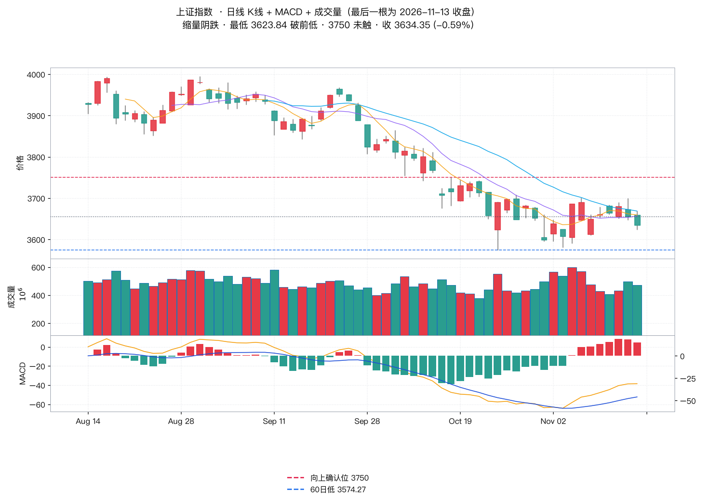
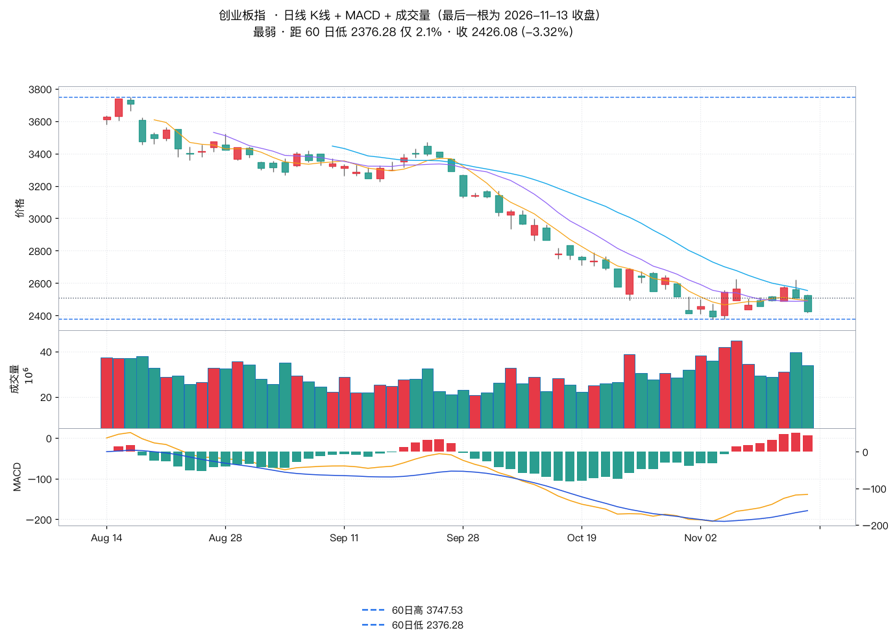
| 标的 | 老师口径（价位 / 动作） | 11-13 实测 | 是否触发 | 动作 |
|---|---|---|---|---|
| 海天瑞声 | 止损两档 107.2 / 100（成本 112.9） | 收 114.00 -8.73%，低 112.24 | 未触发，距第一档还差 4.5% | 两档挂单 |
| 凯莱英 | 144.39 跌破＝跌穿支撑；止损 106 / 100；反弹到 132 附近减成本 | 收 147.41 -3.45%，低 146.85 | 支撑未破，差 2.46 元 | 等反弹减成本 |
| 国电南瑞 | 跌破 22.8 走人；过不了中枢上沿就放下捡二买 | 收 23.26 +0.35%，低 22.93 | 差 0.13 元未破 | 挂 22.8 止损 |
| 华峰测控 | 247 卖出，20 元差价接回（≈227） | 收 226.52 -5.53%，低 223.50 | 已进入接回区 | 可接回 |
| 华能国际 | 防守型可看，大结构好；前高 7.49 止损 | 收 7.79 +2.10%，高 7.88 | 已越过 7.49，高点＝60 日新高 | 持有，7.49 止损 |
| 工业富联 | 还没止跌，小背驰后创新低 → 最简单就是止损 | 收 40.10 -7.50%，低 39.81 | 完全成立，60 日新低 | 离场 |
| 银之杰 | 等回拉看二卖；plan B：跌破涨停价 20.26 先减 | 收 27.10 -1.67%，低 26.96 | 未触发，离 20.26 尚远 | 持有待回拉 |
| 华胜天成 | 不看趋势只看反弹，往上要止盈（成本 11.32） | 收 14.30 +10.00% 涨停 | 止盈位当天出现 | 涨停即减 |
| 东方盛虹 | 三卖成立，找机会出掉；分批减 | 收 9.85 -1.10% | 阴跌未止跌 | 分批减 |
| 斯迪克 | 阴线 15 个点太差，止损定两档，不会在最低点止损 | 收 39.00 -14.64% | 自 11/10 高 48.84 回落 20% | 按纪律止损 |
| 美格智能 | 新买，止损放 41.6；防假突破用 40.67 | 收 41.94 -1.76%，低 41.73 | 两档均未破，41.6 差 0.13 元 | 挂 41.6 / 40.67 |
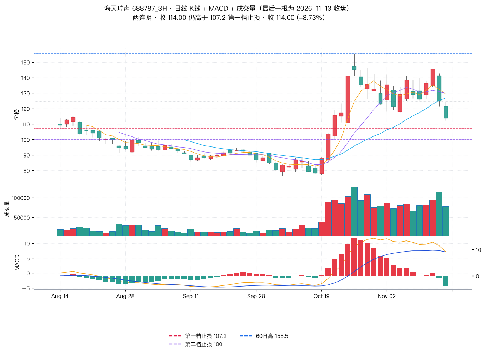
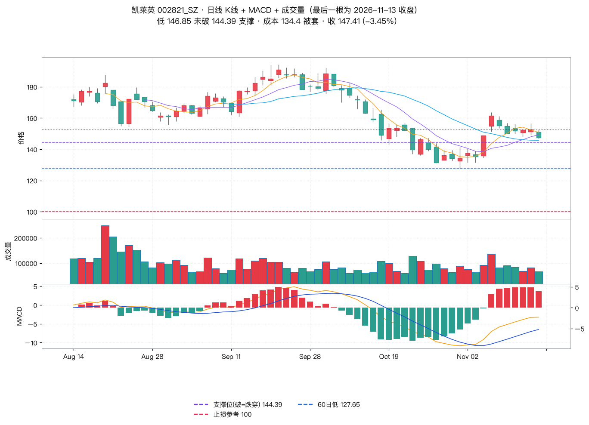
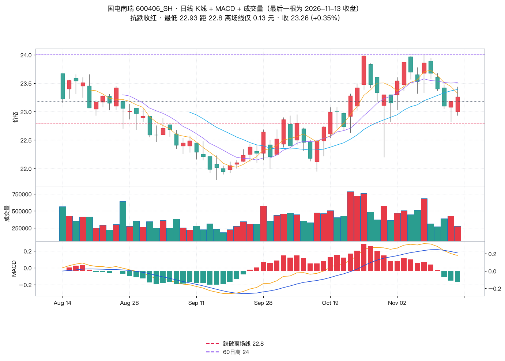
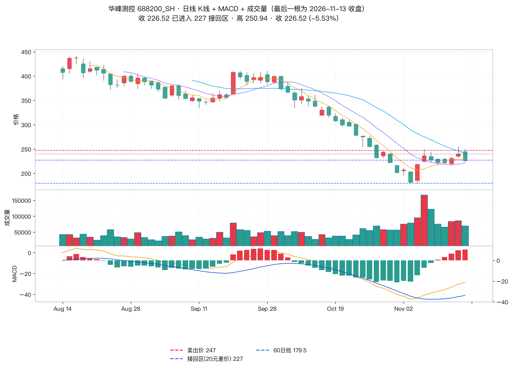
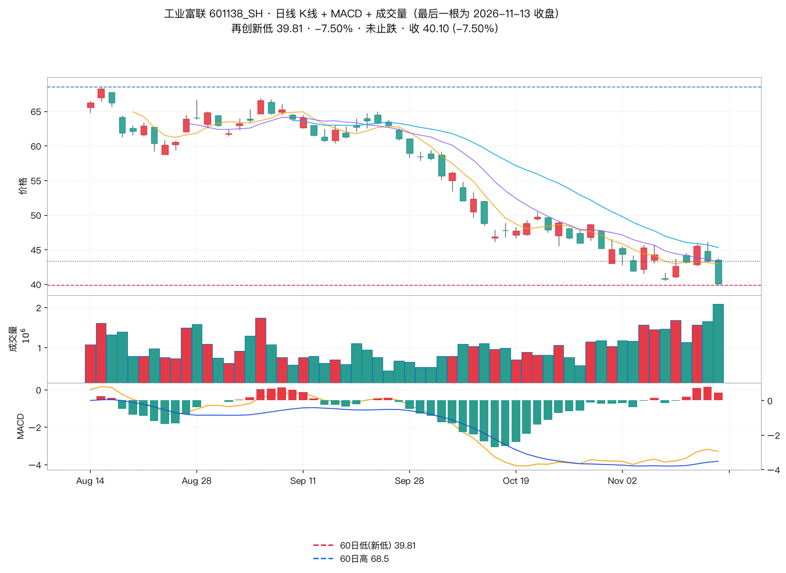
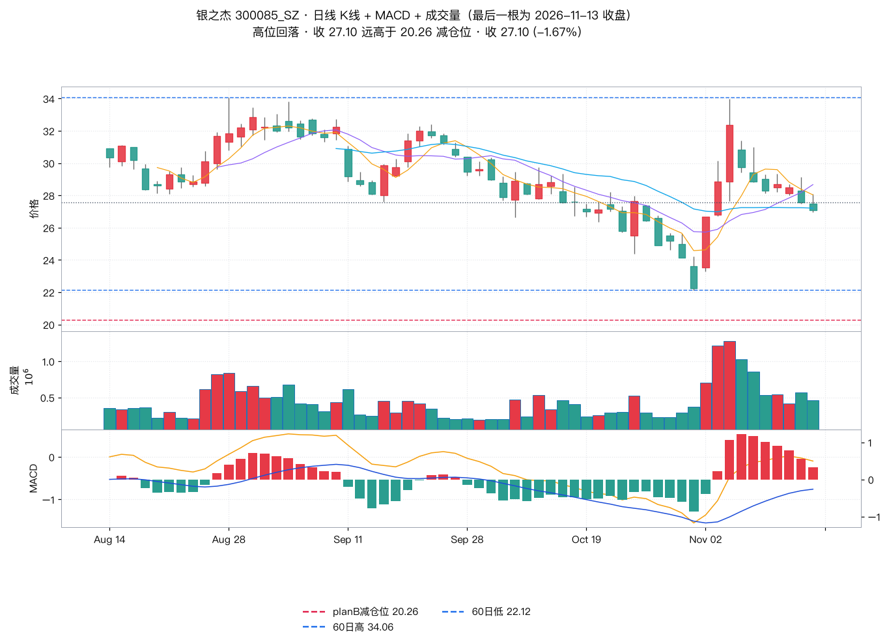
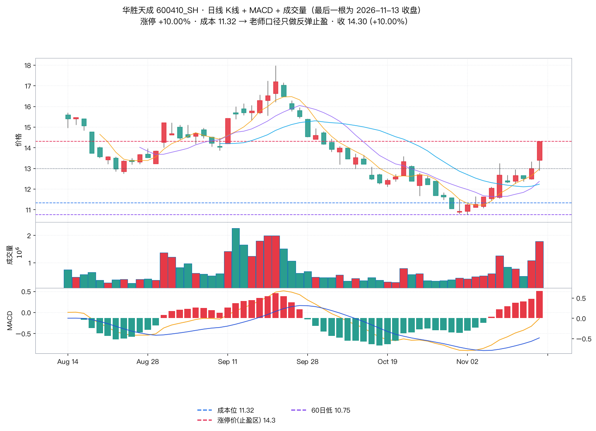
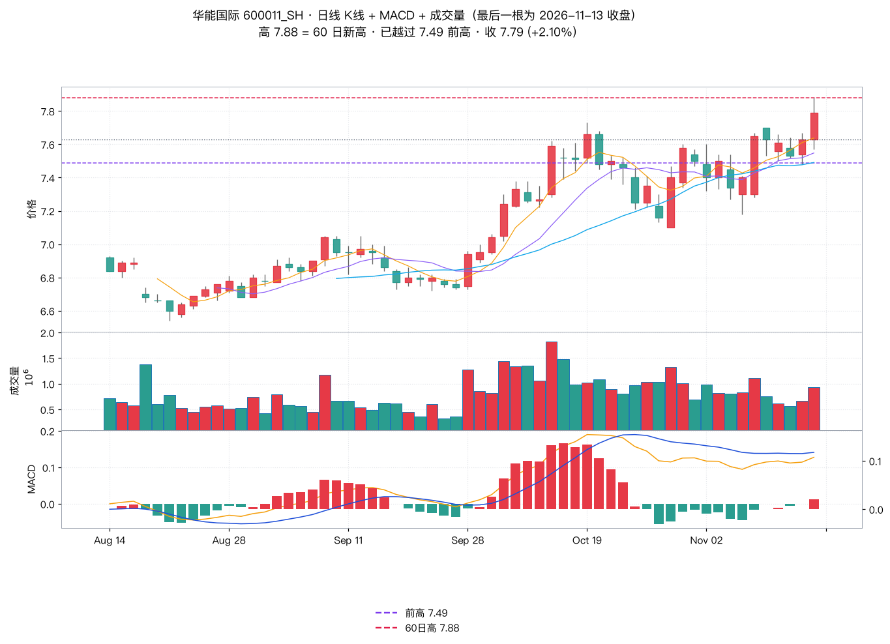
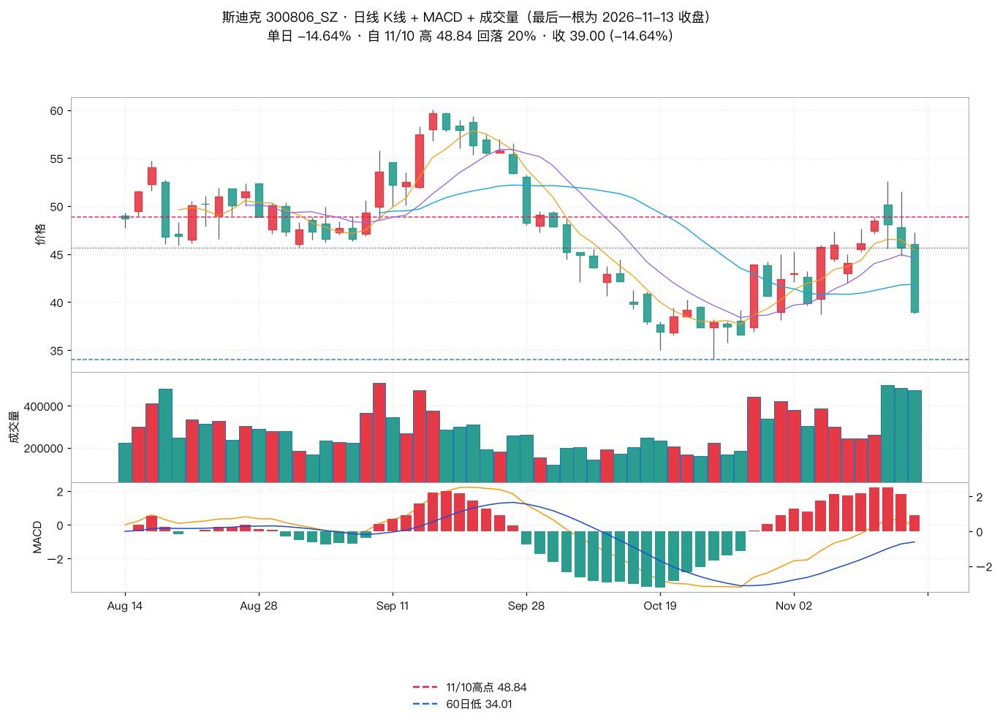
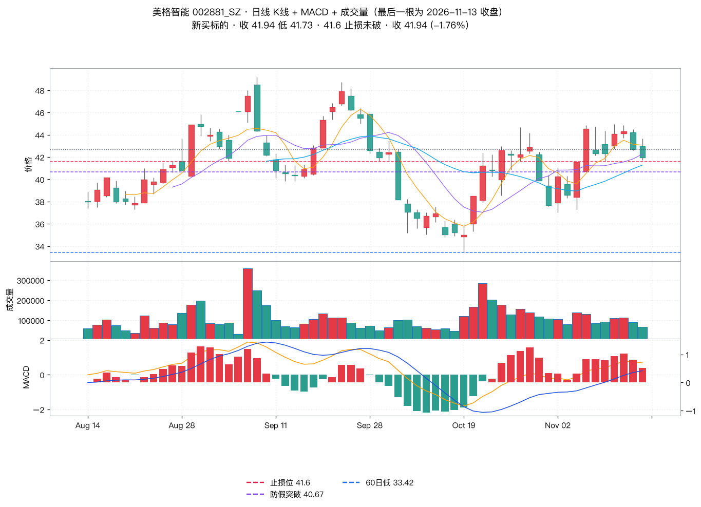
| 标的 | 老师口径（老师原文要点，非我方结论） |
|---|---|
| 南大光电 | 底仓不保险（跟板块同斜率）；要底仓得走到下沿止跌或等它站住再考虑 —— 弱打法，必须轻仓 |
| 春风动力 | 老师自己在看但不敢说：成交额要 10 亿以上，11/13 仅 3.09 亿，流动性不过关；历史新高 329.66 |
| 东材科技 | 反弹弱、总过不去压力位，风控定在压力位；冲不过去就主动走（11/13 -7.18%） |
| 寒武纪 | 是小底背驰，但位置是明显压力，不推荐在这买（11/13 高 1033.18 低 968.01，振幅 7%） |
| 天孚通信 | 深套，适度倒差价、放掉一些；大概率在高点附近震荡（11/13 -10.94%） |
| 双环传动 | 走出 200 结构、挺强，下影线处放止损看一两周；前提是机器人题材不能断 |
| 宁德时代 | 杀过一大把，再杀下去可能性小；关键看能不能组织起那一波，上不去就得走，不管到不到成本 |
| 星辰科技 | 跌穿就减、守住继续吃；止损位不设太深（成本 11.8，11/13 收 12.41 浮盈） |
| 晨光股份 | 套 20 个点，压力在缺口位置，缺口附近可能解套；可倒差价 |
| 黄金 COMEX | 没止跌，月线疑似顶分型验证；3800 是关键位，破了看向 3300–3200，老师倾向跌到那附近再买（长中期） |
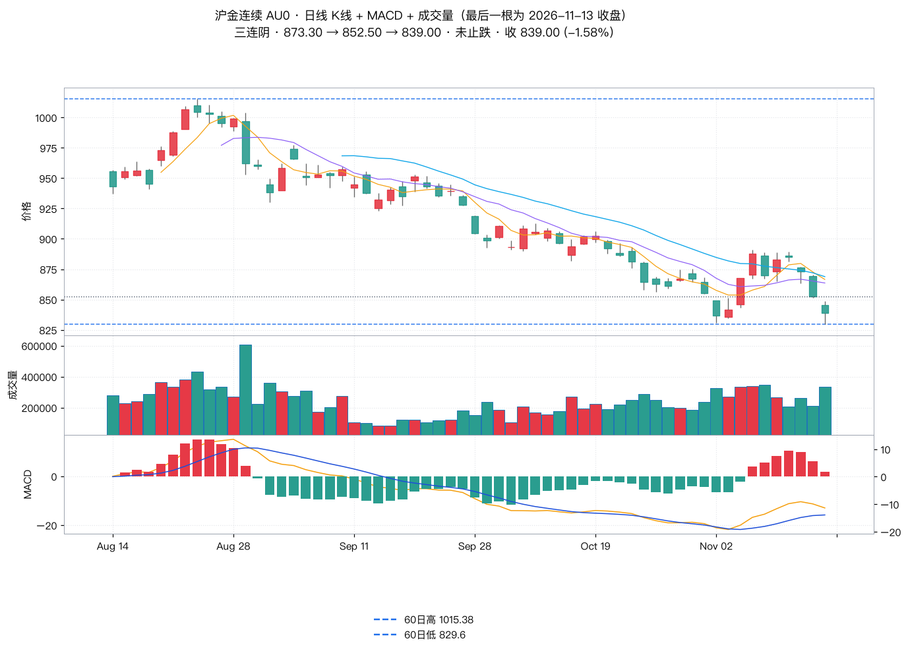
老师用 当升科技 300073（2015–2017 走势）做盲测——看不见名称、看不见日期、看不见大盘和基本面，只能凭图形决策，全程约 70 分钟，结论是「这局我没怎么赚钱」。但方法演示比结果值钱：
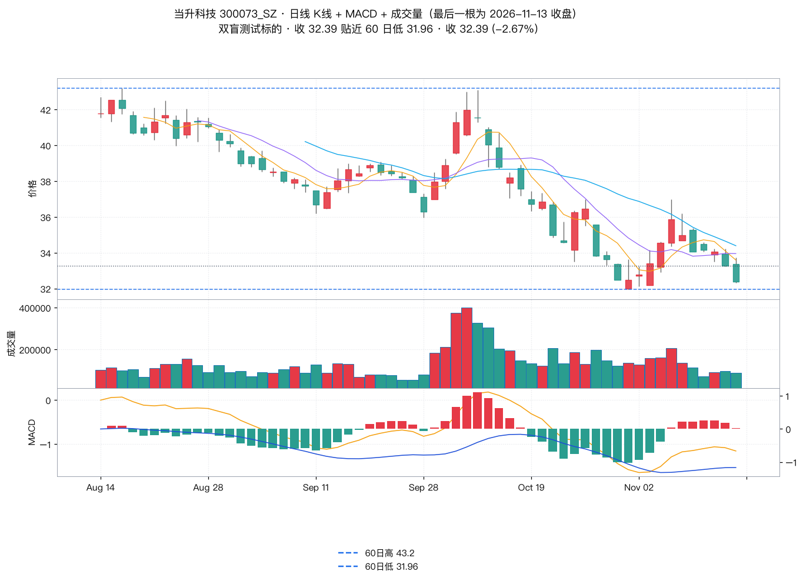
| 老师原文 / 事项 | 实测 | 判定 |
|---|---|---|
| 黄金「3800」 | COMEX 美元/盎司口径，本机无该数据源；沪金连续 11/13 收 839.00 元/克，三连阴 873.30→852.50→839.00 | 方向成立·价位未核验 |
| 「强风电子 220 卖 / 181–188 接回」「一堂股份 13–15 区间」 | 字幕转写存疑、代码无法确认，只保留方法口径（高抛选前高线、接回等下沿、必防补跌） | 不点名不核验 |
| 「002249 / 4500」 | 代码与价格对不上（三花智控 11/13 收 7.13），无法映射到实盘 | 不核验 |
| 全程未点评指数、板块、热点 | 本场是答疑＋训练，没有板块级增量信息；与 11/13 收评相比是减法 | 本期无板块信号 |
| 华峰测控「247 卖、20 块差价接回」 | 接回位 ≈227；11/13 收 226.52、低 223.50 —— 接回区当天即到位 | 口径一致 |
来源：都业华《高级班》2026-11-14（周六）周末直播字幕，执业编号 A0400626100004。仅供参考，不作为买卖依据，据此操作风险自担。投资有风险，入市需谨慎！
口径：日线为 Tushare 前复权日线（截至 2026-11-13 收盘），涨跌停家数取东财涨跌停池（不含 ST／北交所），沪金为新浪内盘期货 AU0 连续；未使用分钟级 K 线与 czsc 复算，缠论定性按老师口径引用；字幕由 AI 自动生成，股票名称与价格转写存疑处已在正文与表 3 标注。